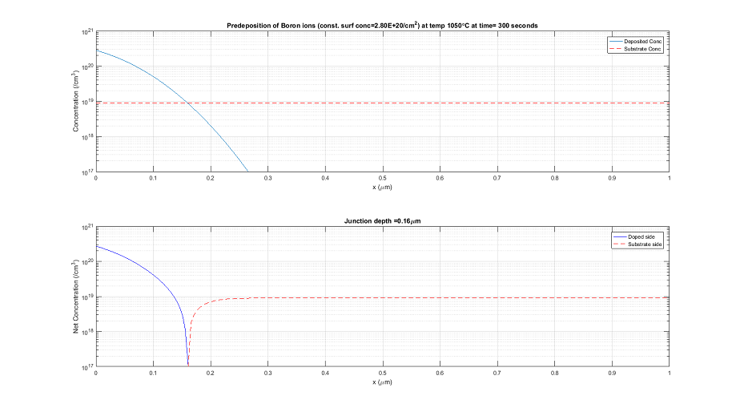

Welcome to Microelectronics Animations.
The animations helps to visualize how the diffusion is changing the concentration of impurities across the depth of substrate. It also shows a absolute impurity curve which helps to differentiate the two types of impurity. It provides junction depth calculations.
It is written in Matlab. Therefore, easy to understand and reuse.
Screenshot of Predep animation.
Screenshot of Drive In animation
Authors and Contributors
Rounak Singh (@rounaksingh)
Support or Contact
Having trouble with Animations? Contact me and I will help you sort it out.